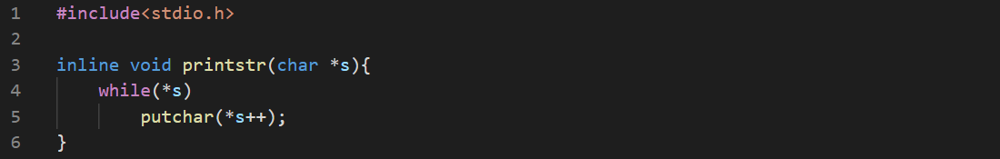

Now we'll implement a very basic printf() funciton.
Our function expects atleast one parameter with format string. Only c (char), d (int) and s (string) is allowed. We use a helper function to print strings.

The main loop of the function iterates through the format string and decides what to print. The c is passed as int and ints are converted to strings before passing. This function can't print negative numbers.

Now test with main function.